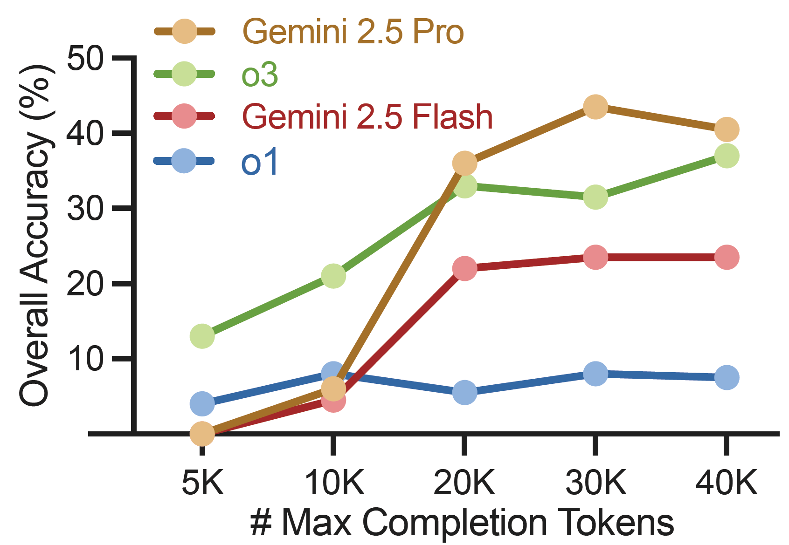
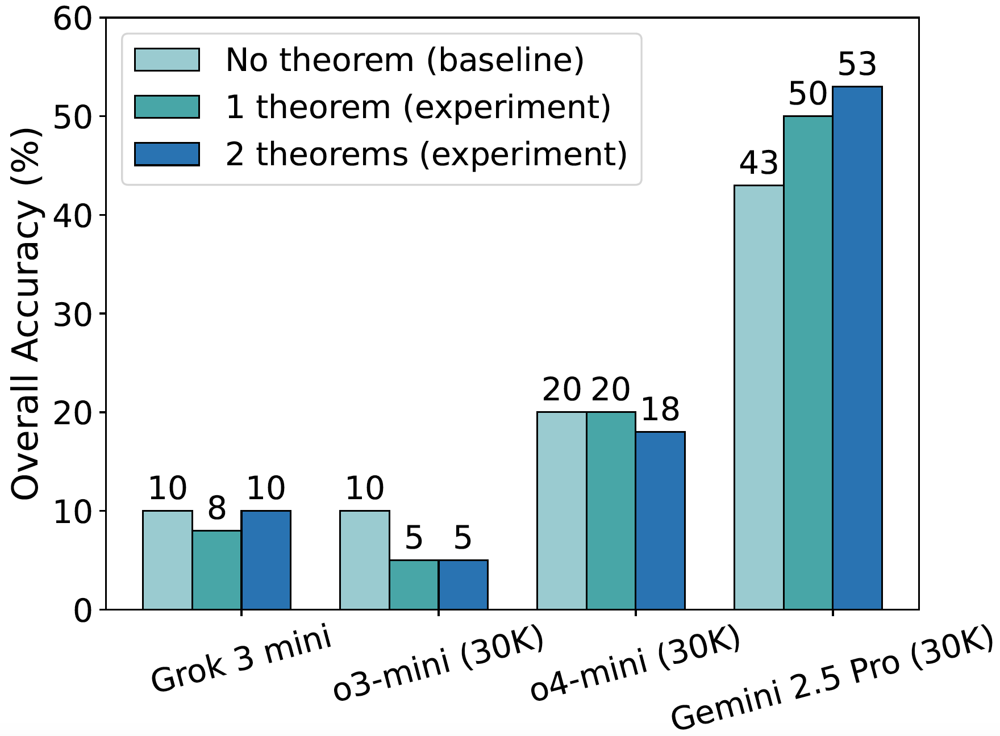
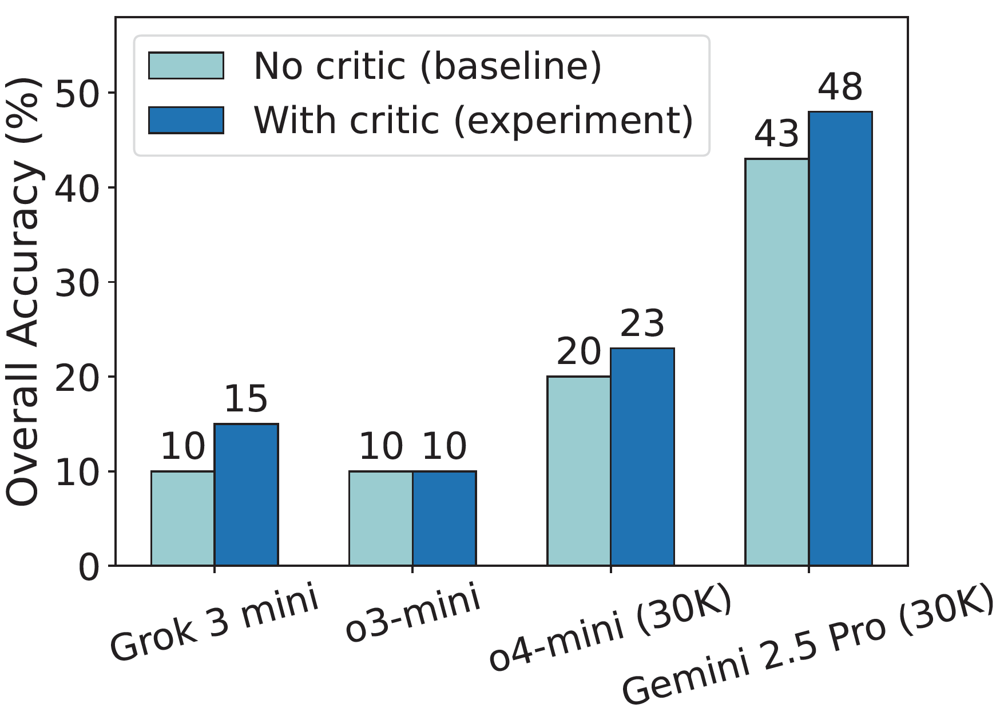
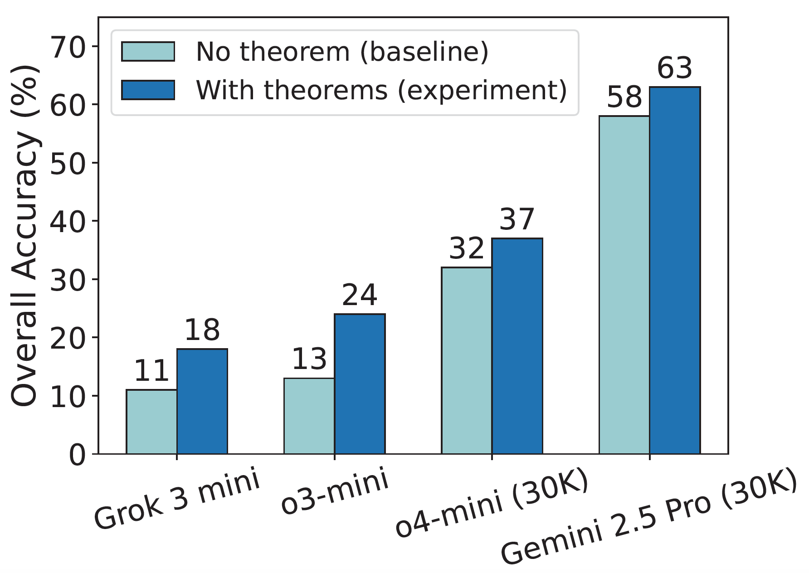
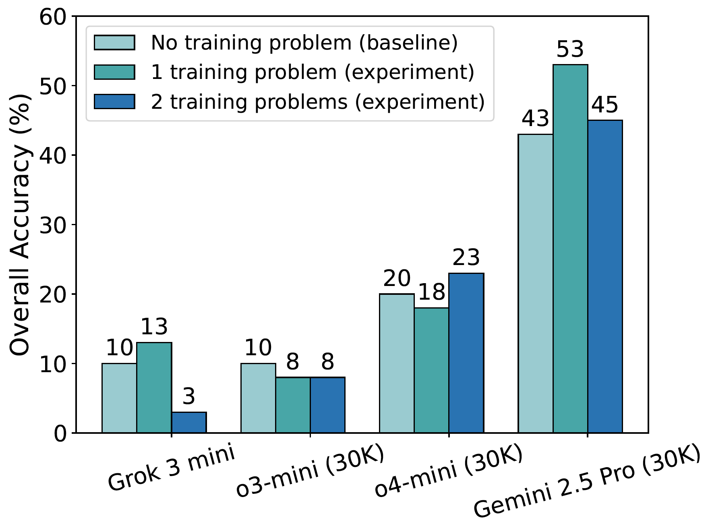

🏆 The interactive leaderboard for the IneqMath is available here.
In-depth Study
We conduct an in-depth analysis to understand the performance characteristics and limitations of current models on IneqMath. Our study encompasses three key areas: failure solution analysis to identify common error patterns in LLM-generated proofs, scaling laws in model size to examine how model capacity affects reasoning accuracy, and scaling laws in test-time computation to investigate the impact of extended reasoning chains. These analyses reveal critical insights into the challenges of inequality proving and provide guidance for improving mathematical reasoning capabilities.

Failure solution analysis: As shown in the table above, the most common step-wise errors in LLM-generated solutions are logical gaps (85.0% average failure rate across models) and improper generalization from toy cases (59.7%). Less frequent, but still significant, are errors from numerical approximations (26.9%) and miscalculations (6.8%).

Scaling laws in model size: This figure shows how final-answer accuracy (which evaluates only the correctness of the final predicted answer) scales with model size for LLMs. As model size increases, we observe a steady improvement in answer accuracy, reflecting an empirical scaling law: larger models are better at inferring correct bounds and inequality relationships.

Scaling laws in model size: However, the trend for answer accuracy does not hold when considering overall accuracy—which requires both a correct answer and valid intermediate reasoning steps—as shown in the figure above. In this case, the scaling curve flattens, indicating that increased model size alone is insufficient to eliminate step-by-step reasoning errors.

Scaling laws in test-time computation: The figure above shows that while models like Gemini 2.5 Pro and o3 initially improve with more tokens, performance gains saturate (e.g., beyond 20K tokens). This indicates that merely increasing computational budget offers diminishing returns for achieving rigorous, step-wise correct proofs, highlighting the need for more than just longer thought processes.
Improvement Strategies
We explore four promising strategies to enhance LLM performance on IneqMath: retrieving relevant theorems as hints, self-improvement via critic as feedback, taking annotated theorems as hints, and retrieving training problems as demonstrations.

Retrieving relevant theorems as hints: As shown in the figure, providing one or two such theorems decreases overall accuracy for weaker models (e.g., Grok 3 mini, o3-mini, o4-mini), likely due to misapplication or distraction by potentially irrelevant information. Conversely, stronger models like Gemini 2.5 Pro benefit from these hints, suggesting advanced reasoning is crucial to effectively use such guidance. These results underscore the potential of theorem-guided reasoning but also highlight the critical need for more sophisticated theorem retrieval mechanisms (e.g., RAG) to reliably enhance LLM performance in inequality proving.

Self-improvement via critic as feedback: As the figure shows, self-critique consistently improves performance—e.g., Gemini 2.5 Pro's overall accuracy rises from 43% to 48%. This upward trend underscores self-critique as a promising, supervision-free method to enhance the logical rigor and solution quality of LLMs in inequality reasoning.

Taking annotated theorems as hints: The figure reveals a consistent uplift in overall accuracy across models, with gains reaching up to 11% (e.g., for o3-mini).

Retrieving training problems as demonstrations: As shown by the overall accuracy in the figure, Grok 3 mini's performance improves from a baseline of 10% (with no demonstration problem) to 13% when provided with one such problem. However, its accuracy drops sharply to 3% when two problems are used as demonstrations. Similarly, Gemini 2.5 Pro peaks at 53% accuracy with one demonstration problem, declining to 45% with two. o4-mini reaches 23% accuracy with one demonstration problem, a 3% increase from its 20% baseline (without demonstrations).
BibTeX
@article{sheng2025solving,
title={Solving Inequality Proofs with Large Language Models},
author={Sheng, Jiayi and Lyu, Luna and Jin, Jikai and Xia, Tony and Gu, Alex and Zou, James and Lu, Pan},
journal={arXiv preprint arXiv:2506.07927},
year={2025}
}